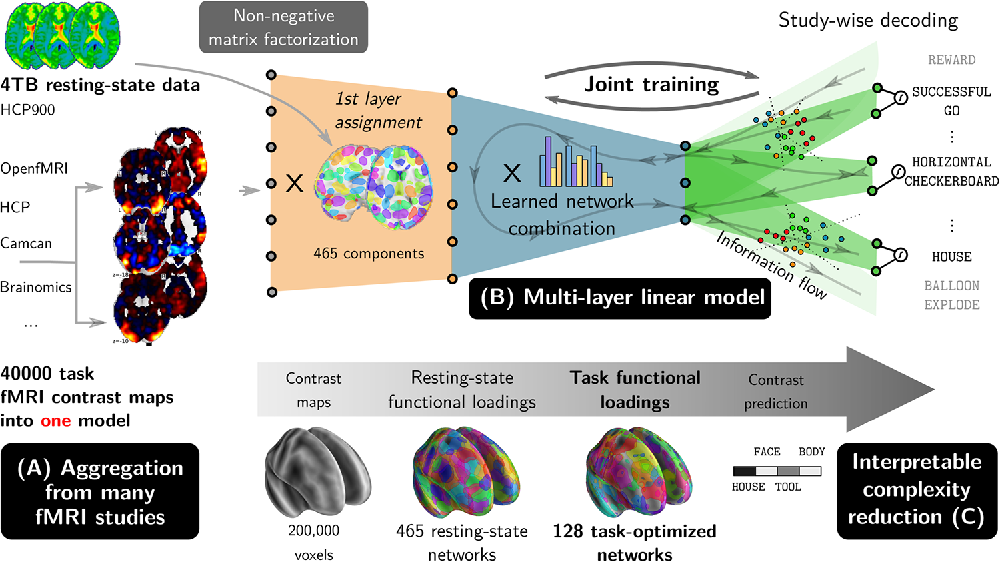

Broad decoding models that can specialize to discriminate closely-related mental process with limited data
TL;DR
Decoding models can help isolating which mental processes are implied by the activation of given brain structures. But to support a broad conclusion, they must be trained on many studies, a difficult problem given the unclear relations between tasks of different studies. We contributed a method that infers these links from the data. Their validity is established by generalization to new tasks. Some cognitive neuroscientists prefer qualitative consolidation of knowledge, but such approach is hard to put to the test.
Context: Infering cognition from brain-imaging
Often, when interpreting functional brain images, one would like to conclude on the indvidual’s on-going mental processes. But this conclusion is not directly warranted by brain-imaging studies, as they do not control the brain activity, but rather engage the participant via a cognitive paradigm made of psychological manipulations [1]. Brain decoding can help grounding such reverse inferences [2], by using machine learning to predict aspects of the task.
But a brain decoding model can seldom support broad reverse-inference claims, as typical decoding models are trained in a given study that samples only a few aspects of cognition. Thus the decoding model only concludes on the interpretation of the brain activity in the studies’ narrow scope.
Another challenge is that of statistical power. Most functional brain imaging studies comprise only a few dozen subjects, compromising statistical power [3], even more so when using machine learning [4]. While there exists large acquisition efforts, these must focus on broad psychological manipulations that do not probe fine aspects of mental processes.
| [1] | Poldrack 2006, Can cognitive processes be inferred from neuroimaging data? |
| [2] | Poldrack 2011, Inferring Mental States from Neuroimaging Data: From Reverse Inference to Large-Scale Decoding |
| [3] | Poldrack 2017, Scanning the horizon: towards transparent and reproducible neuroimaging research |
| [4] | Varoquaux 2018, Cross-validation failure: Small sample sizes lead to large error bars |
Contribution: Informing specialized decoding questions from broad data accumulation
In Mensch 2021, we designed a machine-learning method that can jointly analyze many unrelated functional imaging studies to build representations associating brain activity to mental processes. These representations can then be used to improve brain decoding in new unrelated studies, thus bringing statistical-power improvements even to experiments probing fine aspects of mental processes not studied in large cohorts.
One roadblock to accumulating information across cognitive neuroimaging studies is that all probe different, yet related, mental processes. Framing them all in the same analysis faces the lack of universally-adopted language to describe cognitive paradigms. Our prior work [5] on this endeavior –the quest for universal decoding across studies–, relied on describing each experimental paradigm in an ontology of cognitive processes and psychological manipulations. However, such approach is not scalable. Here, rather, we infered the latent structure of the tasks from the data, without explicitely modeling the links between studies. In my eye, this was a very important ingredient of our work, and it is non trivial that it enables improving the decoding of unrelated studies.
| [5] | Varoquaux 2018, Atlases of cognition with large-scale human brain mapping |
Capturing representations was key to transfering across study: representations of brain activity captured distributed brain structures predictive of behavior; representations of tasks across studies captured decompositions of behavior well explained by brain activity. Of course, the representations that we extracted were not as sharp as the stylized functional modules that have been manually compiled from decades of cognitive-neuroscience research.
From a computer-science standpoint, we used a deep-learning architecture. This is the first time that we witnessed a deep-learning architecture outperforming well-tuned shallow baselines on functional neuroimaging data [6]. This success is likely due to the massive amount of data that we assembled: as our method can readily work across studies, we were able to apply it to 40000 subject-level contrast maps.
| [6] | There have been many reports of deep architectures on functional brain imaging. However, in our experience, good shallow benchmarks are hard to beat. |

Our deep-learning architecture
A research agenda that does not win all hearts
Our underlying research agenda is to piece together cognitive-neuroimaging evidence on a wide variety of tasks and mental processes. In cognitive neuroscience, such consolidation of knowledge is done via review articles, that assemble findings from many publications into a consistent picture on how tasks decompose on elementary mental processes implemented by brain functional modules. The literature review and the ensuing neuro-cognitive model are however verbal by nature: assembling qualitative findings. I, for one, would like to have quantitative tools to foster big-picture view. Of course, the challenge with quantitative approaches as ours is to capture all qualitative aspects of the question.
Over the years that I have been pushing these ideas, I find that they are met with resistance from some elite cognitive neuroscientists who see them as unexciting at best. The same people are enthusiastic about new data-analysis methods to dissect in fine details brain responses with a detailed model of a given task, despite limited statistical power and external validity. My feeling is that the question of how various tasks are related is perceived as belonging to the walled garden of cognitive neuroscientists, not to be put to the test by statistical methods [7].
| [7] | The second round of review of our manuscript certainly felt as if the method was judged by cognitive-neuroscience lenses, and not the validity of the data analysis that it entailed. |
Yet, as clearly exposed by Tal Yarkoni in his Generalization crisis, drawing conclusions on mental organization from a few repetitions of a tasks is at risk of picking up idiosyncrasies of the task or the stimuli. A starting point of our work (Mensch 2021) was the fall of statistical power in cognitive neuroscience, documented by Poldrack 2017, but one reviewer censored this argument [8]. This exchange felt to me as a field refusing to discuss publicly its challenges, which leaves no room for methods’ researchers such as myself to address them.
| [8] | Comments in the first review |